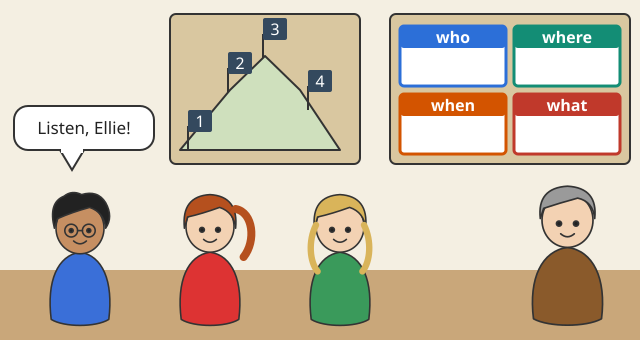

Nacherzählen: Station für Station
Mit einem KI-Tutor lernen
Ein KI-Tutor erklärt dir diese Seite und hilft dir bei den Aufgaben. Wähl deinen Assistenten:
Mit Claude öffnen Mit ChatGPT öffnen Mit Mistral Vibe öffnen
Du nutzt dein eigenes Konto beim Anbieter. Der Assistent ist kein Angebot von lernapps.net: lernapps liefert nur Inhalte und Aufgaben. Die Wahl gilt für alle Seiten, nur auf diesem Gerät.
Amir erzählt eine Geschichte nach

Von links: Amir (Brille), Ellie (roter Pferdeschwanz), Sophie (Zöpfe) und Mr Hill (graue Haare). An der Wand hängen der Geschichtenberg und die story map.
Quelle: eigene Zeichnung. Lizenz: CC-BY-4.0.Mr Hill hat Amir eine kurze Geschichte gegeben. Amir erzählt sie jetzt Ellie nach, und Sophie hört zu. Er liest nicht vor und schreibt nichts ab. Er erzählt, was passiert ist, in eigenen Worten.
Aufgabe
Lösung
A fox found a red glove in the park. He took it home. A girl came and took it back
Das ist abgeschrieben, nicht in eigenen Worten.
A fox took a red glove. Later a girl got it back richtige Antwort
In eigenen Worten und im simple past.
A fox takes a red glove. Later a girl gets it back
Das ist simple present, nicht simple past.
Die Zeit ist die der Geschichte, die Worte sind deine.
Das kannst du danach: Du erzählst eine Geschichte am Geschichtenberg Station für Station nach, im simple past und in eigenen Worten.
Diese Wörter sind neu auf dem Klassenzimmer-Poster.
| Wort | Bedeutung |
|---|---|
| retell | nacherzählen |
| glove | Handschuh |
| fox | Fuchs |
| kitten | Kätzchen |
Den Berg Schritt für Schritt abgehen
Jetzt liest Amir eine andere Geschichte: „Last Sunday Ellie's rabbit Coco ran out of the garden. Ellie and Peter ran after her down the road. Coco hid under a green car. Peter sat down and called her quietly. Coco came out and Peter carried her home.“

Der Geschichtenberg zur Geschichte vom Kaninchen Coco. Amir geht ihn von Fähnchen 1 bis Fähnchen 4 ab.
Quelle: eigene Zeichnung. Lizenz: CC-BY-4.0.Amir erzählt zu jedem Fähnchen einen Satz in eigenen Worten:
- Beginning: Coco, Ellie's rabbit, ran out of the garden.
- Build-up: Ellie and Peter ran after her.
- Climax: Coco hid under a car.
- Ending: Peter got her and took her home.
Merke
Nacherzählen heißt: Station für Station, im simple past, in eigenen Worten. Du gehst den Berg von beginning bis ending ab und lässt keine Station aus. Du schreibst nicht jedes Wort der Geschichte ab, aber die Zeit bleibt die der Geschichte. Die Stichwörter am Berg und die Map stehen im simple present, deine Nacherzählung im simple past.
Erzähle Station für Station nach
Aufgabe
Lösung
Richtige Antwort: 1. Sophie and Mrs Parker went to the market., 2. Sophie saw a little black kitten., 3. The kitten followed them to the bus., 4. Mrs Parker said yes to the kitten and they took it home.
Markt, Kätzchen sehen, Kätzchen folgt, nach Hause nehmen.
Aufgabe
Lösung
Peter erzählt im simple present richtige Antwort
Die Geschichte steht im simple past.
Peter lässt eine Station aus
Alle vier Stationen sind da.
Peter schreibt die Sätze ab
Peter sagt es mit anderen Worten.
Beim Nacherzählen bleibt die Zeit der Geschichte.
Aufgabe
Lösung
Die Station climax fehlt richtige Antwort
Dass das Kätzchen folgt, ist der spannende Moment.
Die Station beginning fehlt
Der Markt ist der Anfang.
Die Sätze stehen im simple present
Alle Verben stehen im simple past.
Zu jedem Fähnchen gehört ein Satz.
Aufgabe
Lies: „On Wednesday Amir took the bus to the library. He put his bag on the seat. At the library he got off, but the bag stayed on the seat. The bus left! In the evening the driver brought the bag to the school.“ Erzähle sie mit je einem Satz pro Station nach.
- Amir · take · bus · library
- Amir · put · bag · seat
- bag · stay · seat
- driver · bring · bag · school
Lösung
- Amir took the bus to the library on Wednesday. (auch richtig: Amir took the bus to the library.; Amir took a bus to the library on Wednesday.; Amir took a bus to the library.)
- Amir put his bag on the seat. (auch richtig: Amir put the bag on the seat.; Amir put a bag on the seat.)
- The bag stayed on the seat. (auch richtig: His bag stayed on the seat.; Amir's bag stayed on the seat.)
- The driver brought the bag back to the school in the evening. (auch richtig: The driver brought the bag back to the school.; The driver brought the bag back to school in the evening.; The driver brought the bag back to school.; The driver brought the bag to the school in the evening.; The driver brought the bag to the school.; The driver brought the bag to school in the evening.; The driver brought the bag to school.; The driver brought Amir's bag back to the school in the evening.; The driver brought Amir's bag back to the school.; The driver brought Amir's bag back to school in the evening.; The driver brought Amir's bag back to school.; The driver brought Amir's bag to the school in the evening.; The driver brought Amir's bag to the school.; The driver brought Amir's bag to school in the evening.; The driver brought Amir's bag to school.)
Aufgabe
Hör zu und schreibe, was du hörst.
- KI
- KI
- KI
Lösung
- Ellie told the story to Peter.
- Sophie did not forget the end.
- Mr Hill smiled at the children.
Selbst sagen und nacherzählen
Aufgabe
Hör zu, sprich nach und nimm dich auf. Vergleiche dann mit dem Original.
Tipp
Hör zu. Sprich dann langsam nach.
- What happened then?KI
- Can you tell the story again?KI
- How did the story begin?KI
Zum Aufnehmen braucht diese Aufgabe JavaScript. Die Beispiele kannst du auch ohne anhören.
Lösung
- What happened then?
- Can you tell the story again?
- How did the story begin?
Offene Aufgabe
Erzähle eine Geschichte nach, die dir jemand erzählt hat oder die du gelesen hast. Schreibe auf Englisch vier Sätze, einen für jede Station.
Tipp
Die App bewertet nicht. Prüfe anhand der Punkte.
Eine gute Antwort enthält:
Lösung
Last summer a boy found a little bird in the garden. The bird could not fly, so he gave it water. A big cat came, but the boy took the bird into the house. After two days the bird flew away.
Rückblick und Ausblick
Rückblick auf Montag: An der Wand der Geschichtenecke hängen Berg und story map noch leer, aber du kannst sie jetzt füllen. Die Map sagt, wer, wo, wann und was passiert. Am Berg hängen die Hauptereignisse, so fasst du zusammen. Und Station für Station erzählst du eine Geschichte in eigenen Worten nach, im simple past.
Am Dienstag hängt Mr Hill fünf Wegweiser an den Berg und neue Bilder an die Wand. Zuerst wiederholst du kurz, was du zum Beschreiben von Bildern brauchst. Dann lernst du die Wegweiser kennen und erzählst mit Bildern.